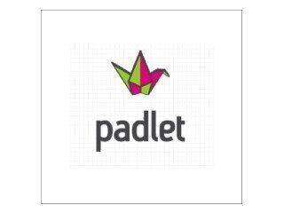
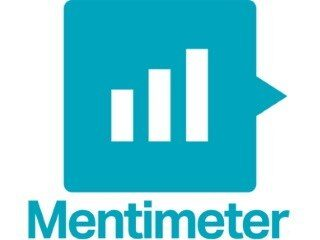
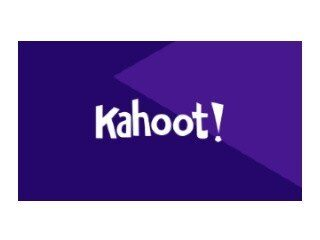
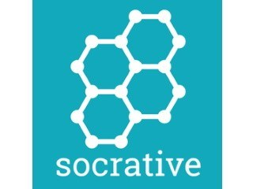
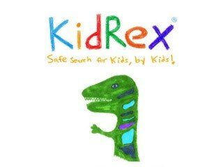
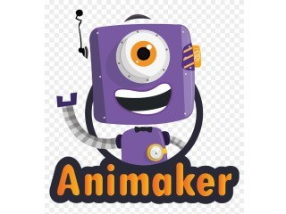
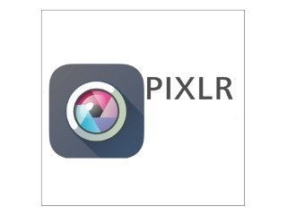
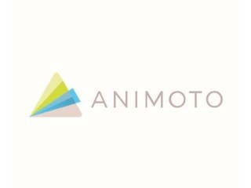
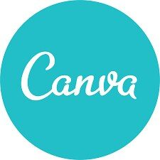
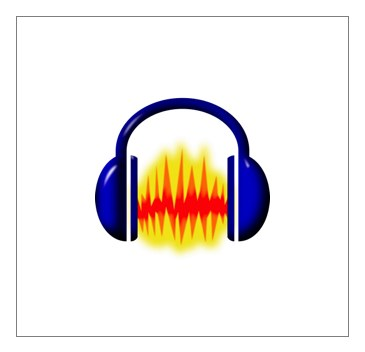

🛠️ Ferramentas Digitais
Uma seleção de ferramentas digitais para apoiar o ensino, a aprendizagem, a colaboração, a pesquisa e a criação de conteúdos.

Padlet
Murais colaborativos para partilhar ideias, conteúdos, trabalhos e recursos.
Abrir ferramenta ↗
Mentimeter
Sondagens, perguntas, quizzes e nuvens de palavras em tempo real.
Abrir ferramenta ↗
Kahoot!
Aprendizagem baseada em jogos através de quizzes e atividades interativas.
Abrir ferramenta ↗
Socrative
Avaliação formativa, questionários e respostas dos alunos em tempo real.
Abrir ferramenta ↗
KidRex
Motor de pesquisa orientado para crianças e jovens utilizadores.
Abrir ferramenta ↗Google Académico
Pesquisa de artigos científicos, teses, livros e outras publicações académicas.
Abrir ferramenta ↗
Animaker
Criação de vídeos e animações com modelos e recursos para conteúdos educativos.
Abrir ferramenta ↗
Pixlr
Ferramentas online para edição e criação de imagens.
Abrir ferramenta ↗
Animoto
Criação de vídeos a partir de fotografias, clips e música.
Abrir ferramenta ↗Genially
Apresentações, atividades, infografias, quizzes e conteúdos interativos.
Abrir ferramenta ↗
Canva
Apresentações, cartazes, infografias, vídeos e outros conteúdos visuais.
Abrir ferramenta ↗
Audacity
Gravação e edição de áudio para podcasts, rádio, voz e projetos multimédia.
Abrir ferramenta ↗Experimenta e descobre
As ferramentas podem ter versões gratuitas e pagas e as condições de utilização podem mudar. Consulta sempre o site oficial antes de criar uma conta.